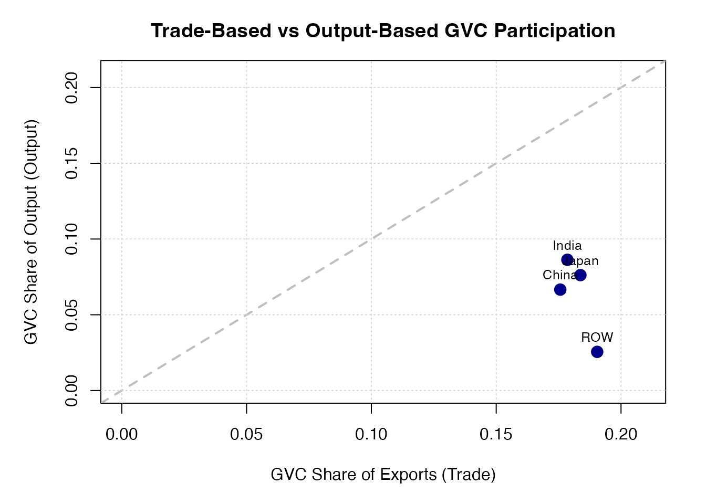
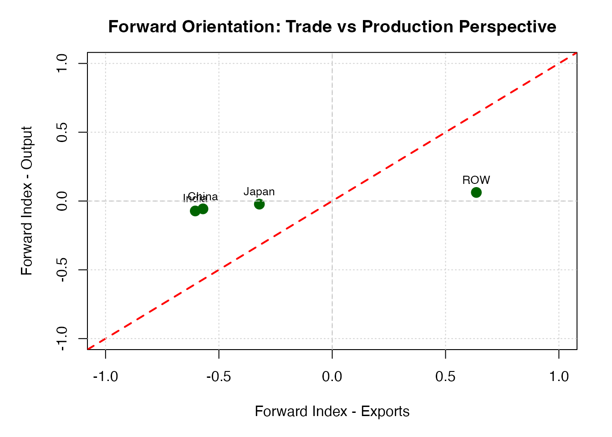

bm2023-vs-bm2025.RmdThe gvcAnalyzer package implements two complementary frameworks for measuring global value chain (GVC) participation:
This vignette compares these approaches, demonstrating when each measure is most appropriate and how they provide complementary insights into GVC integration.
The trade-based framework decomposes gross exports from country s to country r into GVC components:
Key feature: Measures how much of a country’s exports participate in GVCs.
The output-based framework decomposes gross output of country s into production components:
Key feature: Measures how much of a country’s production is GVC-related, regardless of export destination.
| Dimension | Trade-Based | Output-Based |
|---|---|---|
| Unit of analysis | Gross exports | Gross output |
| Focus | Border-crossing flows | Production structure |
| Scope | Export transactions | Total production |
| Captures | Export intensity in GVCs | Comprehensive GVC involvement |
| Best for | Trade policy analysis | Industrial policy analysis |
io <- bm_build_io(
Z = bm_toy_Z,
Y = bm_toy_Y,
VA = bm_toy_VA,
X = bm_toy_X,
countries = bm_toy_countries,
sectors = bm_toy_sectors
)
trade_meas <- bm_2025_trade_measures(io)
trade_meas[, c("exporter", "share_GVC_trade", "share_PF_trade",
"share_TS_trade", "share_PB_trade", "forward_trade")]
#> exporter share_GVC_trade share_PF_trade share_TS_trade share_PB_trade
#> 1 China 0.1756661 0.1984122 0.03284796 0.7687398
#> 2 India 0.1785146 0.1811235 0.03352451 0.7853519
#> 3 Japan 0.1837284 0.3156778 0.04722529 0.6370969
#> 4 ROW 0.1904535 0.8021454 0.03153766 0.1663169
#> forward_trade
#> 1 -0.5703276
#> 2 -0.6042284
#> 3 -0.3214191
#> 4 0.6358285
out_meas <- bm_2025_output_measures(io)
out_meas[, c("country", "share_GVC_output", "share_PF_output",
"share_TS_output", "share_PB_output", "forward_output")]
#> country share_GVC_output share_PF_output share_TS_output share_PB_output
#> 1 China 0.06660911 0.03561645 0.8717403 0.09264324
#> 2 India 0.08629724 0.03848983 0.8508079 0.11070228
#> 3 Japan 0.07617141 0.06569826 0.8458922 0.08840956
#> 4 ROW 0.02552628 0.14810774 0.7660051 0.08588719
#> forward_output
#> 1 -0.05702680
#> 2 -0.07221245
#> 3 -0.02271129
#> 4 0.06222055To compare the two frameworks, we merge the key indicators:
# Standardize column names
trade_meas$country <- trade_meas$exporter
comparison <- merge(
trade_meas[, c("country", "share_GVC_trade", "forward_trade")],
out_meas[, c("country", "share_GVC_output", "forward_output")],
by = "country"
)
comparison
#> country share_GVC_trade forward_trade share_GVC_output forward_output
#> 1 China 0.1756661 -0.5703276 0.06660911 -0.05702680
#> 2 India 0.1785146 -0.6042284 0.08629724 -0.07221245
#> 3 Japan 0.1837284 -0.3214191 0.07617141 -0.02271129
#> 4 ROW 0.1904535 0.6358285 0.02552628 0.06222055
par(mar = c(5, 5, 3, 2))
plot(
comparison$share_GVC_trade,
comparison$share_GVC_output,
pch = 19,
col = "darkblue",
cex = 1.5,
xlab = "GVC Share of Exports (Trade)",
ylab = "GVC Share of Output (Output)",
main = "Trade-Based vs Output-Based GVC Participation",
xlim = c(0, max(comparison$share_GVC_trade, comparison$share_GVC_output, na.rm = TRUE) * 1.1),
ylim = c(0, max(comparison$share_GVC_trade, comparison$share_GVC_output, na.rm = TRUE) * 1.1)
)
text(
comparison$share_GVC_trade,
comparison$share_GVC_output,
labels = comparison$country,
pos = 3,
cex = 0.8
)
abline(a = 0, b = 1, lty = 2, col = "gray", lwd = 2)
grid()
par(mar = c(5, 5, 3, 2))
plot(
comparison$forward_trade,
comparison$forward_output,
pch = 19,
col = "darkgreen",
cex = 1.5,
xlab = "Forward Index - Exports",
ylab = "Forward Index - Output",
main = "Forward Orientation: Trade vs Production Perspective",
xlim = c(-1, 1),
ylim = c(-1, 1)
)
text(
comparison$forward_trade,
comparison$forward_output,
labels = comparison$country,
pos = 3,
cex = 0.8
)
abline(h = 0, v = 0, lty = 2, col = "gray")
abline(a = 0, b = 1, lty = 2, col = "red", lwd = 2)
grid()
This vignette demonstrated the complementarity of trade-based and output-based GVC measures.
For robust empirical research on global value chains, we recommend computing both frameworks and interpreting results in light of their complementary strengths.
sessionInfo()
#> R version 4.5.1 (2025-06-13)
#> Platform: aarch64-apple-darwin20
#> Running under: macOS Sequoia 15.6
#>
#> Matrix products: default
#> BLAS: /Library/Frameworks/R.framework/Versions/4.5-arm64/Resources/lib/libRblas.0.dylib
#> LAPACK: /Library/Frameworks/R.framework/Versions/4.5-arm64/Resources/lib/libRlapack.dylib; LAPACK version 3.12.1
#>
#> locale:
#> [1] en_US.UTF-8/en_US.UTF-8/en_US.UTF-8/C/en_US.UTF-8/en_US.UTF-8
#>
#> time zone: Asia/Tokyo
#> tzcode source: internal
#>
#> attached base packages:
#> [1] stats graphics grDevices utils datasets methods base
#>
#> other attached packages:
#> [1] gvcAnalyzer_0.1.0
#>
#> loaded via a namespace (and not attached):
#> [1] digest_0.6.38 desc_1.4.3 R6_2.6.1 fastmap_1.2.0
#> [5] Matrix_1.7-4 xfun_0.54 lattice_0.22-7 cachem_1.1.0
#> [9] knitr_1.50 htmltools_0.5.8.1 rmarkdown_2.30 lifecycle_1.0.4
#> [13] cli_3.6.5 grid_4.5.1 sass_0.4.10 pkgdown_2.2.0
#> [17] textshaping_1.0.4 jquerylib_0.1.4 systemfonts_1.3.1 compiler_4.5.1
#> [21] rstudioapi_0.17.1 tools_4.5.1 ragg_1.5.0 bslib_0.9.0
#> [25] evaluate_1.0.5 yaml_2.3.10 jsonlite_2.0.0 rlang_1.1.6
#> [29] fs_1.6.6 htmlwidgets_1.6.4